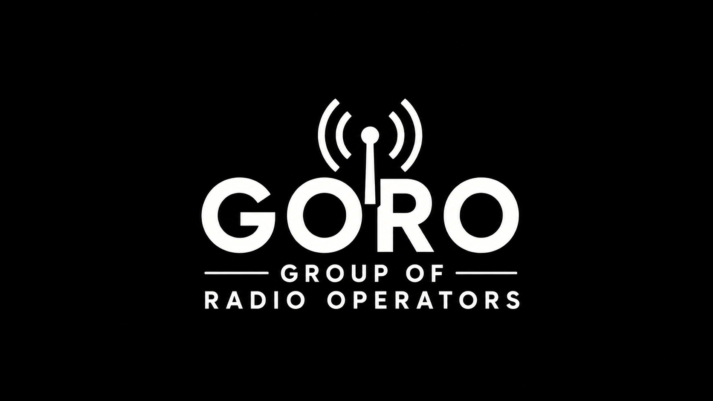

01
Profile
持ち前のリーダーシップと決断力で、開発を前に進める指揮を執る。誰かの指示を待つより、自分で構図を描き、検証と改善まで責任を持って走り切る。
Origin
恵比寿
都市的な感性と現場感覚の両方を持つ。
MBTI
ENTJ-A（指揮官）
方針決定・意思伝達・役割整理に強い。
Domain
H/W · Embedded · Robotics
制御・組み込み・ロボット実装が主軸。
02
Field
Notes
制作の現場の写真。

03
Capa-
bility
License
第一級陸上特殊無線技士
制度理解と安全運用、無線系の基礎知識を保持。
License
第三級陸上特殊無線技士
現場運用に必要な免許・手続きへの理解。
Work Style
短サイクル検証 / 現場最適
試作→測定→改善を高速で回し、直しやすい設計を優先。
04
Time-
line
2025
Awards
METI / Project Lead
経済産業省 AKATSUKIプロジェクト 採択（リーダー）
次世代無線給電技術の開発をリーダーとして推進。
Robocon / A Leader
高専ロボコン 2025 中国大会 デザイン賞 / 全国出場
プロジェクト「厳島」。Aリーダーとして企画・実装を牽引。
Summit / Idea
第3回 起業家サミット アイデア部門 優秀賞
岸・藤原研究室メンバーとして参画し、具体化と発表を担当。
NEDO / H/W Lead
NEDO NEP（ハードウェアリーダー）
ハードウェア側の意思決定と実装を主導。
2024
Team Lead
Robocon / B Leader
高専ロボコン 2024（Bリーダー）
中国地区大会 YASUKAWA賞を受賞。
2022
Origin
NTT / Activities
#地球塾2050 B（NTT）
プロジェクト型学習で発想・実行の経験を獲得。
05
Dev
Stack
Microcontrollers / Boards
Arduino
プロトタイピング、I/O制御、周辺機器統合。
Mbed
組み込み開発の基礎、ドライバ周り。
Raspberry Pi Pico
小型制御、センサ入力、リアルタイム制御。
STM32
低レイヤ寄りの実装、制御の最適化。
Languages / Runtime
C
組み込み、速度・メモリ制約下の実装。
Python
検証スクリプト、データ処理、制御補助。
Ubuntu 組み込み
システム構築、運用、パッケージ管理。
ROS2 / OpenCV
ロボット基盤、画像処理、認識の入口。
06 — GET IN TOUCH
Let's build
something real.
ハードウェア・組み込み・ロボティクス、無線給電まわりの話。お気軽にどうぞ。